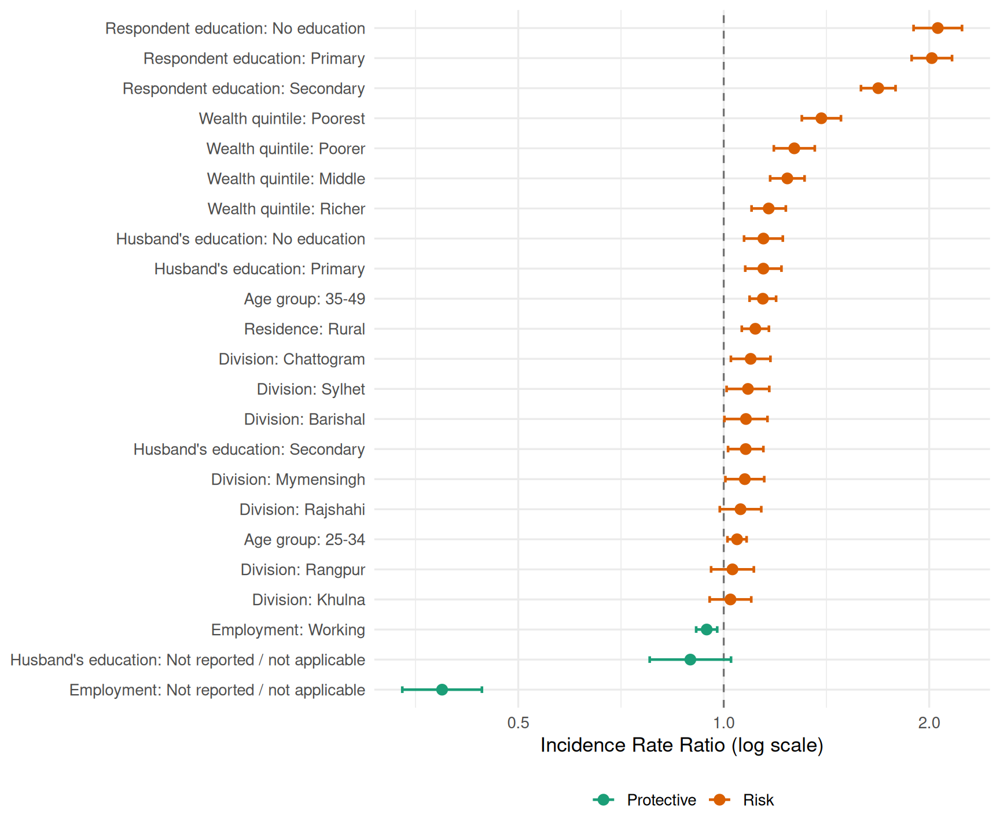

Code
knitr::include_graphics("figures/figure1_risk_factor_prevalence.jpg")
The chart below displays the percentage of women affected by each individual risk factor, grouped by their functional domain (Healthcare Access, Reproductive Health, and Nutritional).
The points represent the estimated percentage (prevalence) in the population, while the horizontal lines show the 95% confidence intervals (the range within which we are certain the true value lies). For instance, Healthcare Access risks are the most common, with over 60% of women receiving inadequate antenatal care. In contrast, Nutritional risks like underweight and stunted height affect approximately 10–12% of the sample.
knitr::include_graphics("figures/figure1_risk_factor_prevalence.jpg")
The distribution of the total syndemic score reveals the cumulative nature of risk among women in Bangladesh. While 24% of women have no identified risks, the majority (64.6%) experience between one and three concurrent risks.
knitr::include_graphics("figures/figure2_syndemic_distribution.jpg")
For descriptive purposes, the syndemic score was collapsed into three ordinal categories representing the level of cumulative burden.
burden_data <- read_csv("data/paper_burden_categories.csv", show_col_types = FALSE)
burden_data |>
transmute(
`Burden Level` = case_when(
str_detect(burden_category, "Low") ~ "Low Burden",
str_detect(burden_category, "Medium") ~ "Medium Burden",
str_detect(burden_category, "High") ~ "High Burden"
),
`Score Range` = case_when(
str_detect(burden_category, "Low") ~ "0",
str_detect(burden_category, "Medium") ~ "1–3",
str_detect(burden_category, "High") ~ "≥4"
),
`Unweighted n` = format(unweighted_n, big.mark = ","),
`Weighted Percentage (%)` = sprintf("%.1f%%", weighted_percent)
) |>
kable(
caption = "Classification of women by syndemic burden category (n = 11,657)",
align = "llrr"
)| Burden Level | Score Range | Unweighted n | Weighted Percentage (%) |
|---|---|---|---|
| Low Burden | 0 | 2,860 | 24.0% |
| Medium Burden | 1–3 | 7,487 | 64.6% |
| High Burden | ≥4 | 1,310 | 11.4% |
The syndemic burden is strongly patterned by social determinants and geographic location. Mean syndemic scores across key demographic groups reveal significant disparities, particularly by education level and wealth quintile.
knitr::include_graphics("figures/figure4_education_residence.jpg")
The interaction of household wealth and urban-rural residence further identifies the most vulnerable populations. While higher wealth is protective in both settings, rural women in the lowest wealth quintiles experience a disproportionately high cumulative risk burden.
knitr::include_graphics("figures/figure5_intersectionality_wealth_residence.jpg")
Geographically, the syndemic burden is not uniform across Bangladesh. Divisions such as Sylhet and Mymensingh exhibit higher average scores and a greater prevalence of high-burden cases compared to divisions like Dhaka or Khulna.

Survey-weighted quasi-Poisson regression (φ = 0.77 from the full svyglm model; diagnostic weighted GLM φ = 1.08) was fit for the raw syndemic score. Results are incidence rate ratios (IRR): the multiplicative change in expected syndemic score per unit change in a predictor, holding all other variables constant.
table3 <- read_csv("data/table3_quasipoisson_irr.csv", show_col_types = FALSE)
table3 |>
mutate(variable_group = clean_variable_group(variable)) |>
transmute(
Group = variable_group,
Category = category,
Reference = if_else(is.na(coefficient), "✓", ""),
`IRR (95% CI)` = IRR_CI,
`p-value` = p_formatted
) |>
kable(
caption = "Table 3. Survey-weighted quasi-Poisson regression: predictors of syndemic burden score (n = 11,657)",
align = "llcll"
)| Group | Category | Reference | IRR (95% CI) | p-value |
|---|---|---|---|---|
| Age group | 15-24 | ✓ | 1.00 (reference) | NA |
| Age group | 25-34 | 1.05 (1.01-1.08) | 0.007 | |
| Age group | 35-49 | 1.14 (1.09-1.19) | <0.001 | |
| Respondent education | Higher | ✓ | 1.00 (reference) | NA |
| Respondent education | Secondary | 1.68 (1.59-1.79) | <0.001 | |
| Respondent education | Primary | 2.02 (1.88-2.16) | <0.001 | |
| Respondent education | No education | 2.06 (1.90-2.23) | <0.001 | |
| Wealth quintile | Richest | ✓ | 1.00 (reference) | NA |
| Wealth quintile | Richer | 1.16 (1.10-1.23) | <0.001 | |
| Wealth quintile | Middle | 1.24 (1.17-1.31) | <0.001 | |
| Wealth quintile | Poorer | 1.27 (1.18-1.36) | <0.001 | |
| Wealth quintile | Poorest | 1.39 (1.30-1.49) | <0.001 | |
| Residence | Urban | ✓ | 1.00 (reference) | NA |
| Residence | Rural | 1.11 (1.06-1.16) | <0.001 | |
| Division | Dhaka | ✓ | 1.00 (reference) | NA |
| Division | Barishal | 1.08 (1.00-1.16) | 0.043 | |
| Division | Chattogram | 1.10 (1.02-1.17) | 0.008 | |
| Division | Khulna | 1.02 (0.95-1.10) | 0.526 | |
| Division | Mymensingh | 1.07 (1.01-1.15) | 0.033 | |
| Division | Rajshahi | 1.06 (0.99-1.13) | 0.112 | |
| Division | Rangpur | 1.03 (0.96-1.11) | 0.423 | |
| Division | Sylhet | 1.09 (1.01-1.17) | 0.026 | |
| Employment | Not working | ✓ | 1.00 (reference) | NA |
| Employment | Working | 0.94 (0.91-0.98) | 0.002 | |
| Employment | Not reported / not applicable | 0.39 (0.34-0.44) | <0.001 | |
| Husband’s education | Higher | ✓ | 1.00 (reference) | NA |
| Husband’s education | Secondary | 1.08 (1.01-1.14) | 0.015 | |
| Husband’s education | Primary | 1.14 (1.08-1.22) | <0.001 | |
| Husband’s education | No education | 1.14 (1.07-1.22) | <0.001 | |
| Husband’s education | Not reported / not applicable | 0.89 (0.78-1.02) | 0.107 |
forest_data <- table3 |>
filter(!is.na(coefficient)) |>
mutate(
variable_group = clean_variable_group(variable),
predictor = paste0(variable_group, ": ", category),
direction = if_else(IRR < 1, "Protective", "Risk"),
predictor = factor(predictor, levels = predictor[order(IRR)])
)
ggplot(forest_data, aes(x = IRR, y = predictor, color = direction)) +
geom_vline(xintercept = 1, linetype = "dashed", color = "gray45") +
geom_errorbarh(aes(xmin = CI_lower, xmax = CI_upper), height = 0.22, linewidth = 0.8) +
geom_point(size = 2.8) +
scale_x_log10() +
scale_color_manual(values = c("Protective" = "#1b9e77", "Risk" = "#d95f02")) +
labs(x = "Incidence Rate Ratio (log scale)", y = NULL, color = NULL) +
theme(legend.position = "bottom")Warning: `geom_errorbarh()` was deprecated in ggplot2 4.0.0.
ℹ Please use the `orientation` argument of `geom_errorbar()` instead.`height` was translated to `width`.
The full model revealed strong social gradients. Compared with women with higher education, those with no education had 2.06 times the expected syndemic score (IRR 2.06, 95% CI 1.90–2.23). Rural residence was associated with an 11% higher score (IRR 1.11, 95% CI 1.06–1.16). Women in the poorest wealth quintile had 39% higher scores than the richest (IRR 1.39, 95% CI 1.30–1.49). Working women had modestly lower scores (IRR 0.94, 95% CI 0.91–0.98). Husband’s education showed an independent gradient: no education versus higher (IRR 1.14, 95% CI 1.07–1.22).
social_interactions <- read_csv("data/paper_social_interaction_tests.csv", show_col_types = FALSE)
social_interactions |>
transmute(
Test = test,
`F statistic` = sprintf("%.2f", statistic),
`p-value` = p_formatted
) |>
kable(caption = "Ordinal model interaction tests (education × residence; wealth × residence)", align = "lrr")| Test | F statistic | p-value |
|---|---|---|
| Ordinal model: wealth x residence | 0.17 | 0.952 |
| Ordinal model: education x residence | 0.59 | 0.621 |
The interaction tests do not support statistical effect modification by residence for either wealth or education, indicating the evidence is stronger for broad social patterning than for subgroup-specific slopes.